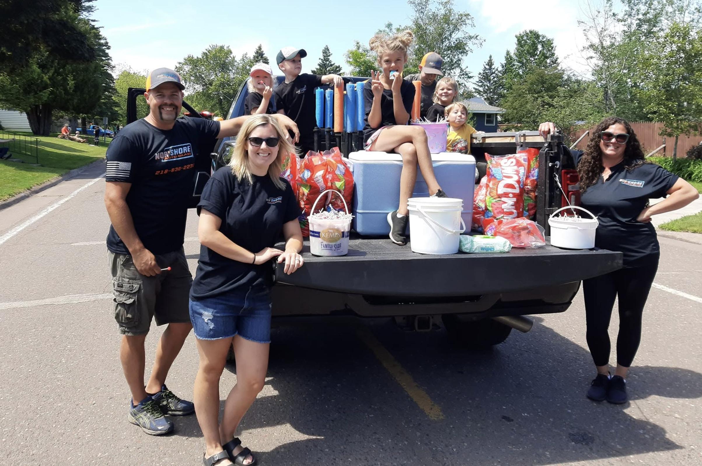

Repair &
replacement
Windshields, side glass, rear glass, and the small fixes that keep damage from becoming a bigger problem.
Get a quoteTwo Harbors · North Shore · Mobile service
Windshield repair and replacement from a local owner-technician who treats your vehicle like it’s his own.
Jesse Miller · Owner / Technician
Serving the North Shore & surrounding areasWhat we do
From a small chip to a full windshield replacement, Nor’shore keeps the process straightforward, honest, and built around your schedule.
Windshields, side glass, rear glass, and the small fixes that keep damage from becoming a bigger problem.
Get a quoteClean, careful cuts for hot rods, classic cars, heavy equipment, and one-of-a-kind projects.
Tell us about itServing Two Harbors and the surrounding North Shore area with a personal, local touch.
Call for availabilityProof in the glass
One job. One clean finish. Drag the line to compare the cracked windshield with the completed install.



Jesse MillerMeet the owner
Nor’shore Auto Glass is owned and operated by Jesse Miller, an automotive glass professional with 15+ years in the industry.
Based in Two Harbors, Jesse brings the kind of care you expect from a local business: clear communication, careful work, and a genuine desire to leave every customer better off than when they called.
From the North Shore
“Great job done quickly, Jesse was very easy to work with, highly recommend.”
“Jesse is an absolute beast… amazing quote on time and price. Next thing I know I have a new windshield.”
“Jesse was incredible to work with and went out of his way to help us after a sheet of ice struck our car.”
Let’s get you clear
Tell us what happened and where you are. Jesse will get back to you with next steps and a straightforward quote.